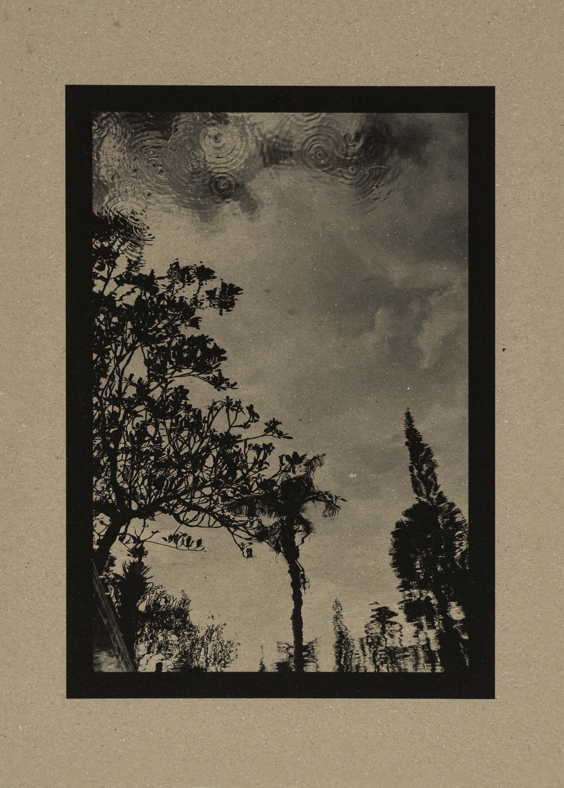
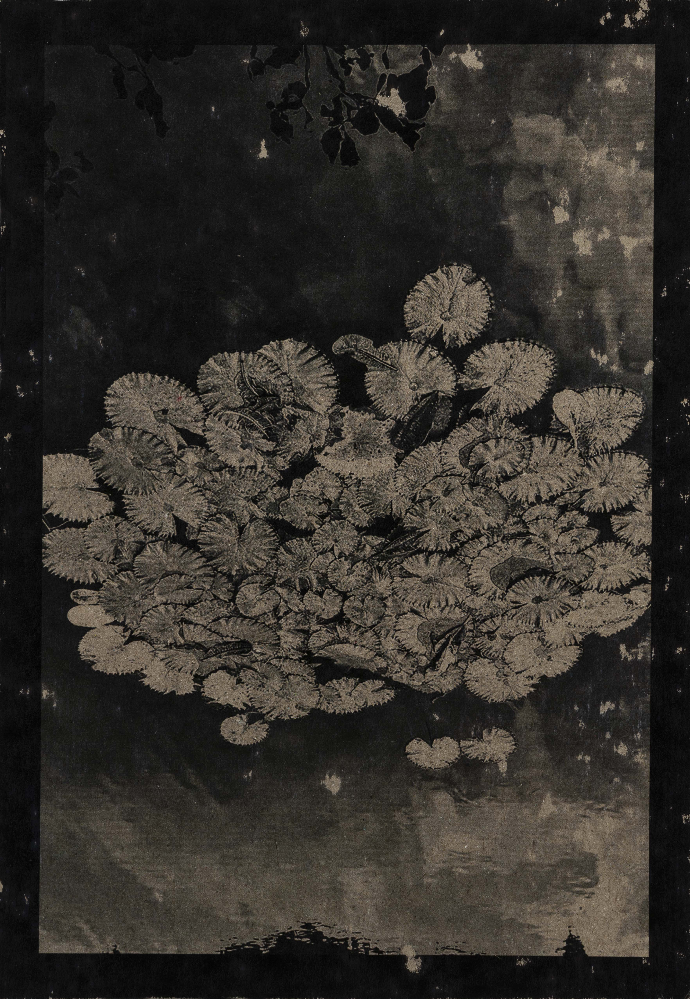

Cuaderno de mirada
Buscar lo sencillo, lo que emociona, la naturaleza, las personas, la espiritualidad y los detalles que otros no ven.
Aprender a mirar antes que a fotografiar
Un curso creativo funciona mejor alrededor de una idea, no de botones del móvil. El ojo fotográfico: entrenar la atención y encontrar belleza en lo cotidiano. Luz y atmósfera: cómo cambia una escena según la hora y la emoción. Composición intuitiva: equilibrio, vacío, colores, líneas, texturas. Narrativa visual: crear una historia con 5–10 imágenes. Edición con sensibilidad: no transformar la realidad, sino potenciarla.
Por mi trayectoria en dirección de arte, decoración y fotografía, mi valor diferencial no es enseñar técnica: es enseñar una forma de mirar.
El taller →
Paseos fotográficos
Paseo «La belleza escondida». Dos horas caminando. Ejercicios: fotografiar una sombra. Encontrar tres texturas. Hacer un retrato sin pedir una pose. Captar un instante de silencio.
Paseo «Barcelona invisible». Mirar puertas, flores, paredes, reflejos, personas. Terminar con una pequeña selección de imágenes y una conversación sobre la mirada.
Y una segunda línea muy mía: experiencias fotográficas en lugares especiales —Formentera, Bali, Capri— mezclando fotografía, naturaleza, calma y sensibilidad.

Lo que me hace diferente
Mis fotografías no buscan la perfección; buscan despertar algo en quien las mira. Me atrae la belleza de lo sencillo: una mirada, una sonrisa sincera, los pétalos de una flor, un paisaje en calma. Aquello que, por cotidiano, a menudo dejamos de ver.
En un mundo lleno de ruido e imágenes fugaces, intento que mis fotografías sean una invitación a detenerse. Un espacio de paz, belleza y autenticidad que nos reconecte con lo esencial.
